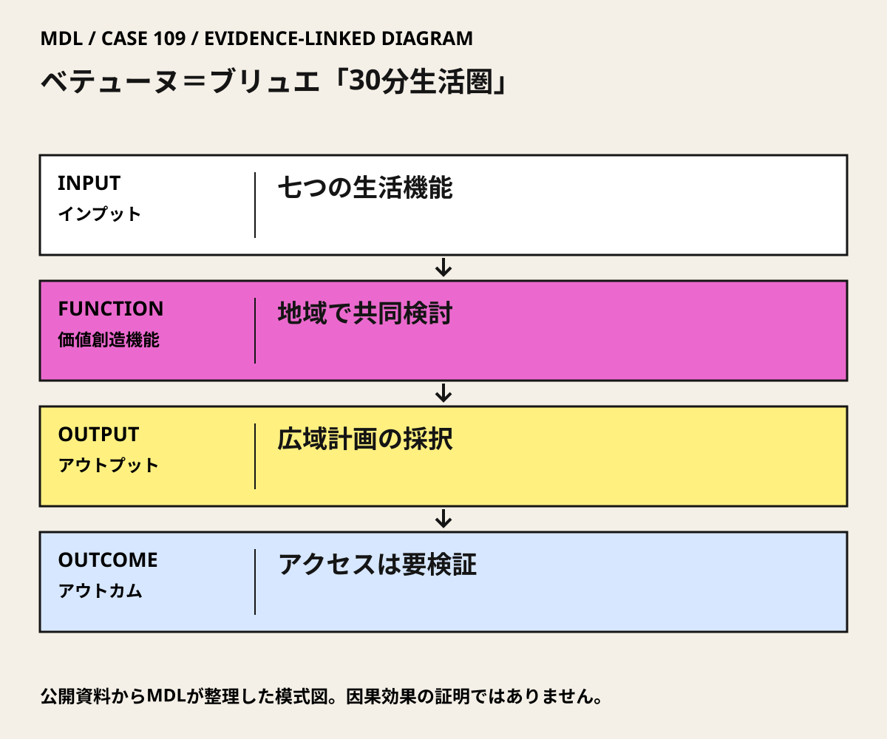

I / INPUT
何を持ち込んでいるか。
活動の出発点となる資源と課題を分けて整理します。「自社」は、その場・制度を運営する組織を指します。
II / VALUE CREATION FUNCTIONS
資源を、どう価値へ変えるか。
以下は既存の8ステップへの編集上の対応づけです。各取り組みの公式な工程名や、全工程を自前で担うことを意味しません。
III / OUTPUT
直接、何が生まれたか。
試作品、データ、契約、標準、育成した人材など、活動から直接生まれたもの。
近接性と七つの生活機能を反映したProjet de territoire 2022–2032。
公開資料で確認出典 12022年12月の地域計画採択。
IV / OUTCOME
その結果、何が変わったか。
実際の利用、行動、業務、事業、地域の変化。報告された変化と、当該活動に帰属できる効果は区別します。
概念が広域自治体の正式な計画へ反映されたことを確認できる。
住民全体の30分アクセス実現、移動時間・排出量削減、計画後のサービス継続については未確認。
公開資料では未確認
PROJECT IN FOCUS / 具体的な事例
ベテューヌ＝ブリュエ「30分生活圏」
確認できた段階：広域地域計画の共同策定 調査確認日 2026-10-06
誰の課題を、どう扱ったか
生まれたもの
近接性と七つの生活機能を反映したProjet de territoire 2022–2032。
評価の限界：計画採択を生活改善の実測としない。「30分」がすべての住民・機能・移動手段に一律達成されたことは確認していない。参加構成と負担配分が見えないため、共同策定だけで公平性が確保されたとは判断できない。
DESIGN BACKWARDS FROM IMPLEMENTATION
社会実装から逆算して、
何を先に整えているか。
実証の先にある導入・運用・継続から、この事例の設計を読み解きます。原典で確認できる仕組みと、MDLの設計解釈・他地域へ応用するための提案を区別して読んでください。「提案」「未実施」と記す内容は、当地で実施済みの工夫ではありません。仕組みの存在と、全案件で成果が出たことも別に扱います。
MORE DETAIL / 運営・根拠・応用
運営の全体像と、学びを深める資料。
費用負担、公表値、応用条件、写真・動画、原典を続けて確認できます。
01どう動かしているのか。
複数の生活圏に対し、移動・居住・仕事・買物・健康・学習・余暇の七つの機能から現状を診断する。将来検討と現地の議論を地域計画に接続し、高密度のパリと同じ時間尺度を機械的に当てはめない。
意思決定と本人の関与：確認した判断：広域自治体が2022年12月に地域計画を採択。次の学習上の判断は、各生活圏で不足する機能と運営主体を特定し、どの手段でアクセスを補うかを決めること。 Carlos Moreno本人とETI研究者が、自治体の選出議員・実務チームと約1年間共同検討。地域計画p.15に関係が記載される。個々の建物・道路の設計実績ではない。
- 地域の生活機能を診断する
- 現地で将来像を検討する
- 共同検討を計画へ渡す
02誰が負担し、誰が担うか。
計画策定に関する自治体と研究側の契約額・負担割合、個別実装の予算は確認資料では未確認。
制度やプログラムの財源と、各参加企業・地域に発生する費用は同じではありません。公開範囲を超える案件別予算・契約条件は未確認です。
03確認できたこと。
近接性と七つの生活機能を反映したProjet de territoire 2022–2032。
読み取れる範囲：計画採択を生活改善の実測としない。「30分」がすべての住民・機能・移動手段に一律達成されたことは確認していない。参加構成と負担配分が見えないため、共同策定だけで公平性が確保されたとは判断できない。
原典で確かめる ↗ 出典の説明 ↓04日本で活かすなら。
日本の地方圏では徒歩15分を前提にせず、複数拠点、公共交通、巡回・出張サービスを組み合わせる。時間目標は目的ではなく、誰がどの機能を使えるかを検証する補助線として使う。
05そのまま真似できないこと。
計画採択を生活改善の実測としない。「30分」がすべての住民・機能・移動手段に一律達成されたことは確認していない。参加構成と負担配分が見えないため、共同策定だけで公平性が確保されたとは判断できない。
06次に、何を確かめるか。
提案・未実施：広域自治体の地域計画担当が2つの異なる生活圏を90日で比較。時間帯・移動手段別に使える七機能数、実所要時間、利用費、運営費を測り、現状維持、複数拠点への機能分散、巡回提供、交通接続を比較する。Continue＝取り残される人が減り運営主体が引受け可能、Pivot＝圏域やサービスの組合せを変更、Stop＝必要なアクセスを失わせる集約や財源不在の拡張。
07写真・図と原資料で確かめる。
現場の写真を見る ↑
DIAGRAM: モビリティデザインラボ · 根拠資料 ↗
図の説明
公開資料に基づく模式図。七つの生活機能 → 地域で共同検討 → 広域計画の採択 → アクセスは要検証。実景や地理的配置を示さない。
2026-10-06 · MDL作成の説明図。第三者の写真・図面の複製ではありません。
冒頭写真：Béthuneの広場、鐘楼と周囲の建物
原資料で、当時の調査・実践を読む ↗08原典を読む。
Projet de territoire 2022–2032 ↗
七つの生活機能、2022年採択、本人とETI・自治体の共同策定
フランス語・自治体の地域計画本文。公開全文PDF。検索索引で該当全文を確認。今回の直接接続は失敗
Procès-verbal du Conseil communautaire du 6 décembre 2022 ↗
2022年12月6日の計画議論とMorenoの支援・30分生活圏
フランス語・公的議事録。公開PDF。検索索引で該当発言確認。直接接続は502エラー
本人共著の近接性の原典。Béthuneの効果評価とは別
英語・本人共著の原論文。全文PDF・オープンアクセス